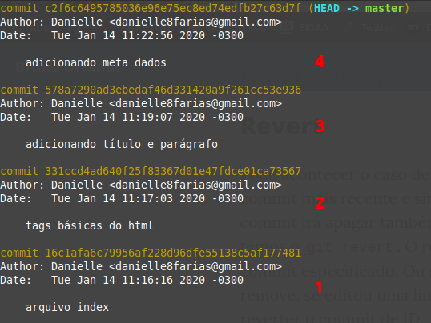
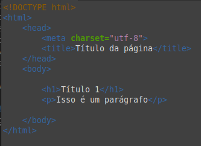
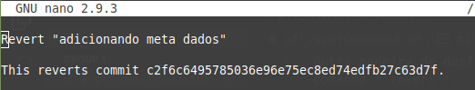

O que esse comando faz é basicamente desfazer tudo aquilo que foi feito dentro de um determinado commit (ou dentro de um intervalo de commits). O que acontece aqui, na verdade, é que o Git cria um novo commit que registra o que foi desfeito.
Por exemplo: se em um commit você adicionou um arquivo, o revert remove; se o commit editou algumas linhas, o revert volta essas linhas ao que eram antes da edição e assim por diante.
Vamos supor que temos a seguinte situação:
Abaixo temos um log dos commits feitos até o momento num repositório. Foram 4 até agora.
E temos o seguinte arquivo HTML.
Se queremos reverter para a situação de antes de adicionar os meta dados (voltar a situação do commit 3), basta usar o seguinte comando:
$ git revert c2f6c649
- $ indica que você deve usar o usuário comum para fazer essa operação.
- c2f6c649 é a chave do nosso último commit. No seu projeto ela será diferente da mostrada aqui.
Note que devemos apontar exatamente para o commit que desejamos reverter e não um anterior a ele.
Em seguida o Git abrirá o editor que foi selecionado como padrão para editar o commit de reversão.
Aqui você grava a mensagem sobre a sua reversão.
Teremos como retorno a seguinte mensagem:
[main 0967249] Revert "adicionando meta dados"
1 file changed, 1 deletion(-)
Caso seja necessário realizar ajustes e correções nos arquivos durante o processo de reversão, será necessário utilizar o comando git add após a edição desses arquivos e em seguida o comando
$ git revert --continue
Para que o processo de reversão seja finalizado.
Usando o HEAD para reverter commits
Também é possível utilizar o revert assim:
$ git revert HEAD~<número_a_partir_de_1>
- substitua o número_a_partir_de_1 por um número, sendo o número 1 o último commit, o 2 o penúltimo, o 3 o antepenúltimo e assim por diante; sem os sinais de < e >.
Cancelando a reversão
Caso haja algum erro durante a reversão, é possível cancelar a operação com o comando:
$ git revert --abort
A falha da reversão ocorre quanto a operação afeta um outro commit posterior ao ponto da reversão.
Atenção!
- O comando de reversão deve ser executado com o index limpo, ou seja, após os commits terem sido feitos.
- Reverta commits apenas se for extremamente necessário.